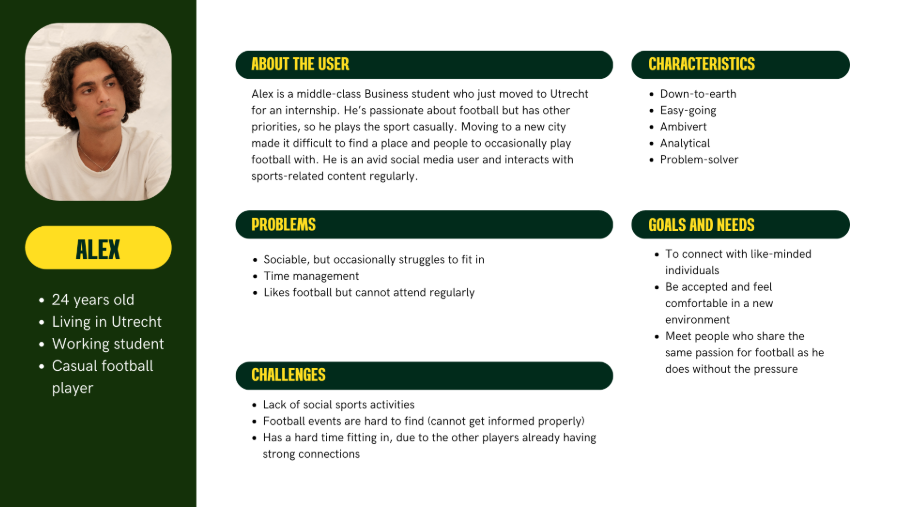

General Information
This branded website is publicly available at https://afterfield.github.io/after-field/
This website was created by:
- Gabija Gembickytė (ID: 233541)
- Alexandra Rujan (ID: 230733)
- Lujza Péczely-Tallai (ID: 230481)
- Leona Brodarić (ID: 230749)
Content
Division of work:
| # | Student Name | Value | Name and link of content |
|---|---|---|---|
| 1. | Gabija Gembickytė | Brand persona and Copywriting | Homepage Copywriting, Brand persona |
| 2. | Alexandra Rujan | Visual identity and Copywriting | Copywriting, Visual identity |
| 3. | Lujza Péczely-Tallai | Values and vision | Values and vision |
| 4. | Leona Brodarić | Mission | Mission |
Brand name:
The name AfterField is a wordplay of “After” and “Field,” capturing our unique value proposition—focusing not only on the football matches themselves, but also on the post-match experiences that bring people together. By emphasizing the word “After,” we playfully highlight the idea that the field is not the only place where real connections are made.
Logo:

Our logo subtly references a football field while maintaining a modern and minimalistic aesthetic, using clean shapes and soft gradients. The two rectangles next to each other symbolize a sense of togetherness and unity, reflecting our community-driven value.
Mission:
In a world where football often gets lost in constant competition and professionalism, we believe in bringing it back to its roots—the social and casual side of the sport. Because football is more than just a game— it's a chance to unwind, have a laugh, and make lasting memories.
Brand persona:
Values:
- Casual
- Light-hearted
- Passion
- Community
For a detailed description, visit: About us page!
Production
Design Elements
Style guide

Color palette
#EE7622- Dark green is often associated with stability, growth, and strength. It has a grounding effect and can symbolize endurance, which is fitting for a sport like football where resilience and toughness are key attributes.
#AAAE7F- This shade of green complements neutral tones and is easy on the eyes. It can bring a sense of balance to the palette while ensuring the look does not feel too harsh or overwhelming. It helps to balance out the deeper tones of green, preventing the design from feeling too intense or heavy- reflecting our brand values of light-heartedness and casualness.
#D0D6B3- To truly stick to the universal and main colour of our brand, another lighter shade of green was added.
#F7F7F7- Off-white shades evoke feelings of cleanliness, simplicity, and freshness. It is a color that feels light and airy, making it ideal for backgrounds or creating a neutral foundation in design.
#FFDE21- Bright yellow breaks the constant repetition of the color green while highlighting the important information and/or content. It conveys a sense of energy, optimism, and enthusiasm. In the context of a football match, it can evoke excitement, and high energy—perfect for a sporting event.
Overall, we went for the colors resembling football pitch (shades of green and a neutral white), to keep consistency with our brand name, AfterField, and to create a positive, cohesive association for our target audience. Yellow was added as a standout color in the design to break the dominant green in the palette and to symbolise the fun, energetic nature of the sport.
During user testing, our target audience immediately recognized who the brand was intended for based on the design alone, confirming a strong alignment between our visual style and target audience.
Font choices
Since our target audience is specifically male football players, we have chosen fonts that had a sleek and simlple look. We try to communicate the casual value of our brand in the simplicity of its design.
Coolvetica
This font was used for the website headings, chosen for its high legibility, clean appearance, and masculine feel. Its rounded forms and tight spacing give it a confident and youthful tone, while the bold weight adds a sense of credibility.
Parabolica
The font was selected for its simplicity, readability, and casual tone, making it a perfect fit for our brand- resonating with a community-oriented, easy-going audience. The font family offers a wide range of weights and styles, including italics and various bold options, allowing for design flexibility while maintaining visual coherence.
User interface patterns (e.g. grids, carousels, menu organizations etc.)
Grid: The layout is built on a flexible 12-column grid, providing a strong foundation for a responsive and balanced design. Most of our sections utilize a single column for a clean, focused presentation of content, allowing for maximum visibility and emphasis. Some of our sections, including images and text, we expand to two columns, creating a balanced, side-by-side layout that enables complementary content. Finally, the third section utilizes a three-column layout (featured only at the beginning of the homepage to communicate “What we are all about”), optimizing space while ensuring clear separation between elements. Since this section is one of the first things users encounter when visiting the landing page, this grid structure is somewhat dynamic, designed to capture attention and spark curiosity.
Navigation bar: We simplified our navigation bar to include as less information as possible. With a simple and clean design, the user is able to find information quickly as it is uncluttered and there is a big black-white contrast between its background and text colour. To highlight our brand's core function—organizing football matches—we included a prominent “Check all the events” button on the right side of the navigation bar.
Carousel: On the landing page, we implemented a scrollable carousel featuring images of football players enjoying themselves and having fun. Concerning hierarchy of content, this element was chosen to be important enough to visually communicate our brand's core value of community. The carousel format allowed us to showcase multiple moments without overwhelming the screen space, maintaining a clean and engaging design.
Cards: Cards are used to add visual interest and stand out within the simplistic design, bringing a touch of vibrancy and playfulness to our website. On the 'About Us' page, cards help emphasize our key brand values, while on the Events page, they display all available football matches. By using cards for event displays, we ensure that the information is easy to digest and visually appealing, providing a clear, engaging layout for users. The rounded corners of the cards avoid rigid, sharp feeling and create a casual, light-hearted atmosphere, reinforcing our brand's tone.
Search bar: We implemented a search bar feature to make football match searching more accessible and tailored to the customer's need. By entering a city location in the Netherlands, users can easily discover events happening in their area.
Filter button: We also integrated a filter feature to enhance the search experience, allowing users to narrow down football match results based on specific criteria such as date and event type. This empowers users to find the most relevant matches quickly and efficiently, ensuring a more personalized and streamlined experience.
Text boxes: As a brand that requires users to sign up through our website, it is crucial to ensure that we collect all relevant contact and user information seamlessly. This is where text boxes play a vital role. They are designed to make the process of entering data easy, clear, and efficient during sign-up for an event.
Overlays: To maintain a clean and uncluttered visual experience, we incorporated overlays to present information in a more focused and engaging way. One of the overlays features a playful interactive question, allowing team members to choose whether they want their name displayed on a digital field when signing up for an event—adding a personal and fun touch. The second overlay appears during the payment confirmation process, reassuring users that their registration fee has been successfully processed and their spot on the field is secured.
Buttons: Buttons are a crucial element in any UI/UX experience. We ensured that each button stands out by using bold colours like yellow or dark green, drawing attention to key actions and enhancing the overall visual hierarchy of the pages.
The structure of the navigation and content (e.g. how content units are distributed across pages)
Staying true to our design principles of simplicity and practicality, we deliberately avoided overcrowding the navigation bar. This helps reduce screen overload and ensures a clean, user-friendly browsing experience. Even so, there are multiple ways to access different pages with help of various buttons and navigation bar, which encourages our users to feel in power and confident when going through our website. The content throughout the site is straightforward and direct—reflecting the preferences of our target audience, who value clarity with no unnecessary distractions.
We structured the website so that each page serves a distinct and intentional purpose. The landing page is designed to briefly introduce AfterField and highlight its core feature—searching for football matches by featuring a prominent search bar in the middle of the header with a logo and a message/slogan of our marketing and communication plan, „All is casual.“. When scrolled, the homepage also features a carousel displaying images from past matches, reinforcing our brand's key value of community and passion in a dynamic and engaging way. Lastly, the page displays partnerships and collaborators to boost brand's credibility, FAQ for any additional questions and a footer in which our contact, newsletter and socials are shown.
The About us page gives users insight into our brand story, values, and mission. The page's primary goal is to clearly position AfterField in the minds of our audience and communicate what we stand for. The Events page lists all current and upcoming matches, organized in chunked event cards, each representing an individual event. When users click on an event card's button, they are directed to a Sign up page page, where they can enter their credentials, read a full event description, and access all relevant information needed to participate. After completing their registration, users are directed to a Payment page where they can enter their payment details. Upon successful submission, an overlay appears to confirm their payment and secure their spot, providing clear feedback on their sign-up status.
Credits
Template credits
This website was built based on the template of buas-media-interactive/prj4-group-template
Other source codes where taken from getbootstrap.com/docs
Image credits
- Events Hero picture - William Smith on Unsplash
- Events card 1 - Ruben Leija on Unsplash
- Events card 2 - phillipkofler on Pixabay
- Events card 3 - planet_fox on Pixabay
- Events card 4 - Fancy Crave on Unsplash
- Events card 5 - David Clarke on Unsplash
- Sign-up Hero picture - Terrace Grain on Unsplash
- Breda field picture - Patrick Konior on Unsplash
- About us- 'Free men playing a soccer game on field image, public domain sport CC0 photo' taken from Rawpixel
- About us- 'Free public domain CC0 photo' taken from Rawpixel
- About us- 'Free men playing a soccer game on field image, public domain sport CC0 photo' taken from Rawpixel
- Home page- Franco Monslavo on Pexels
- Home page- Madknoxx Deluxe on Pexels
- Home page- Omar Ramadan on Pexels
- Home page- Tom Fisk on Pexels
- Home page- Icons taken from Bootstrap gallery
Testing Report
Testing goals
The goal of this user testing is to evaluate the effectiveness, clarity, and usability of the AfterField website for first-time users within our target demographic. Specifically, we aim to assess:
- Initial brand perception: How well the landing page communicates the core concept and target audience of AfterField before any explanation is given.
- Usability and navigation: How intuitively participants can explore the site, locate key features (e.g. events, sign-up options, brand info), and complete relevant tasks.
- Overall user experience: Participants' impressions of the site's design, structure, and how well it aligns with the AfterField brand identity.
- Areas for improvement: Identification of any points of confusion, missing information, or opportunities to enhance clarity, functionality, and engagement.
Testing protocol
| Participants | Age | Gender | |
|---|---|---|---|
| 1. | Marek Tomco | 22 | Male |
| 2. | Omer Taha | 29 | Male |
| 3. | Afro Kumbakumba | 27 | Male |
| 4. | Antonio Rodriguez | 22 | Male |
Participants
The testing protocol will include four individuals who fall within the demographic of our intended target audience. Specifically, these participants will be males between the ages of 22 and 30 who identify as casual football players—that is, individuals who play the sport recreationally rather than professionally. While ethnicity and nationality are not determining factors in the selection process, it is important to stress that all participants currently reside in the Netherlands, ensuring a shared cultural and geographic context for the testing.
Setting
All of the testing interviews will be done in the university setting within a classroom to ensure a structured and controlled space for testing without interruptions. All user testing sessions will be carried out in person, as this format enables the most effective observation of how participants navigate and engage with the interface or our website.
Recording and proof
All of the sessions will be recorded via OBS program through screen capture. This approach will allow us to look back at the exact path taken by each participant, providing deeper insights and feedback. In addition to screen recording, we will capture participants' facial expressions and non-verbal cues using the laptop's built-in camera. This allows for a simultaneous capture of screen activity and participant reactions.
The recordings are available at the following OneDrive link: User testing recordings
Testing questions
First impression questions (before brand introduction):
- What do you think this website is about?
- Who do you think this website is for?
Introducing the brand: “AfterField brings together casual amateur players by organizing matches across the Netherlands. The goal is to create an enjoyable football experience while fostering social interaction. After each game, the players will have the opportunity to enjoy after match activities like free beer round after winning the match.”
Website navigation questions:
- Let's say you wanted to check out Afterfield's events, how would you do it? (2 ways)
- If you wanted to see more information about the brand, where would you go? (2 ways)
- How would you search for an event in a specific city? What about a specific date?
- If you wanted to search specifically for individual events, what would you do?
- Let's say you wanted to sign up for the Afterfield event in Breda, how would you do it?
- Can you sign up for the event in Breda again, but this time as a team?
- How would you return to the homepage?
- If you wanted to subscribe to our newsletter, where would you look?
Post testing questions:
- What did you think of the overall experience?
- Was it hard to get by?
- Do you think there's some parts of information that are missing?
- Does the design match the brand?
- Any advice?
Testing findings
The users were overall happy with how they managed to navigate. For them, the website was intuitive and easy to use. Furthermore, despite the positive feedback on the design match between our TA and visual identity, several usability and design issues were identified during testing.
These have been ranked by priority:
- Responsive layout on the Events page- When testing screen formats, it was found that the Events page has to implement a responsive layout. Specifically, the event cards are not displaying correctly on mobile devices. Improvements are needed to ensure the layout adapts seamlessly to smaller screens.
- Event Attendance Transparency- Nearly all participants mentioned the lack of visibility regarding attendance for upcoming matches. Users expressed a strong need to see how many spots were available and how many were already filled for each AfterField event. This data should be clearly displayed on the Events and Sign-Up pages to help manage expectations and encourage participation.
- Terminology for Event Registration- Some users found the labels “Individual Events” and “Team Events” unclear. There was confusion around what action each button initiated. A recommended improvement is to rephrase these options as “Sign up as an Individual” and “Sign up as a Team” to better communicate the functionality and reduce cognitive load.
- Payment Information Visibility- Users wanted access to payment-related information prior to the sign-up process. Displaying pricing or payment details earlier in the user journey (e.g., on the Events overview or event detail pages).
- Event Location Accessibility- The address of the event is currently only visible during the sign-up stage, which users found inconvenient. The event's exact address and date should be prominently displayed on the Events and at the top of the Sign-Up pages.
- Unnecessary Dropdown Functionality- Participants noted that when event types are filtered in the search bar, the dropdown selection for “Individual” or “Team” during sign-up becomes redundant. This may lead to confusion and should either be removed or updated dynamically based on prior user filters.
- Missing “Contact Us” CTA- One participant highlighted the absence of a “Contact Us” button or section in the footer. Including a clear contact pathway is essential for addressing user inquiries and improving support accessibility.
- Lack of Calendar Filter on Homepage- A calendar-based filter is available on the Events page but missing from the Home page. Users suggested adding a similar date-filtering functionality to the Home page to streamline event discovery.
- Inconsistent Name Branding - There is inconsistency in the brand name presentation across the site—appearing both as “AfterField” and “After Field.” Ensuring consistency in naming is crucial for brand recognition and design coherence.
- The size of the navigation bar- One participant mentioned that the navigation bar appears overly thick, with too much white space. A more compact navigation bar would contribute to a cleaner, more balanced layout and better use of screen space.
- Lack of Visual Elements- The Home and About Us pages were described as lacking in visuals. Users wanted to see more imagery that reflects the AfterField community, such as photographs, illustrations, or icons.
Improvements made:
Due to time contraint we managed to implement the most crucial and important changes:
- Responsive layout implemented on the Events page for better mobile display.
- Event attendance info added to Event's cards.
- Payment expectations now visible when clicking on a specific event (under i icon).
- Dropdown menu for "Individual" and "Team" events changed into a simple tagline.
- “Contact Us” button added to the footer.
- Navigation bar made more compact to reduce white space.
- Visual content (photos) added to Home and About Us pages.
The rest were simply minor things that we chose to ignore for now due to time constraints.
Marketing
Context of campaign and promotional activities
Explain the context of the campaign is (What the campaign is about, what the message is, which promotional activities were executed). In addition, present the objectives as mentioned in the Communication & Media Plan.
Explain and justify the chosen channels/platforms used and show there is a solid connection to the objectives established in the Communication & Media Plan.
Learning Points
Identify and justify your learning point (based on the Communication & Media Plan). What did you learn during the duration of the project concerning the campaign? What worked and what didn’t? What went as expected and what didn’t? What would you do differently? Reflect on the past work and describe what you learned.
Future Planning
Reflection on what has been done and describe in detail what you would do if the project would continue.
Describe in detail your future recommendations if the campaign would be continued.
Detail and describe clearly the process of what your would do differently based on you experience on this project related to the marketing assignment.
Professionalism
Present and organize below all social media/online activities of the campaign. Context and material are according to the brand style, image, and vision. Images on the site are of high-quality, readable, and properly designed.

Management
Lean Canvas
Fill in at least 2 bullet points per building block and according to the rubrics.
Problem
- List your top 3 problems you solve for your target group(s).
- Describe briefly how the problems are solved now (existing alternatives).
Solution
- Outline the brand solution(s) you have for the above problem(s).
Customer segments
- List your target customers and/or users.
- Describe briefly the characteristics of your ideal customer (early adopter, brand persona).
Unique value proposition
- With a single, clear compelling message, state why your brand idea is different and worth paying attention to.
Unfair advantage
- List the aspect(s) of your brand that cannot easily be copied, also called your sustainable competitive advantage(s).
Channels
- List your main path to customers.
- How do you reach them? What channel(s) do you use.
Key metrics
- List the key numbers that tell you how your brand experience is doing.
- For example amount of users, downloads, visitors, subscriptions, sales etc. Numbers you are able to measure.
Revenue streams
- List your sources of revenue: describe the revenue model and the (different) revenue stream(s).
Cost structure
- List your main costs: define the fixed and variable costs.
- Calculate the cost per unit.
Services/products
- State what your product and/or service is and how this contributes to your unique value proposition.
- Clarify the fit between the product/service developed and the brand identity/brand image.
Validation of Assumptions
Write a reflection on the choices made in creating choosing the trademark, including an analysis of the existing alternatives.
Appendix
Please use the list below to provide links to evidence for all parts of your justication. Please double-check all links before delivering the website. Do not hesitate to refer to these numbers above.